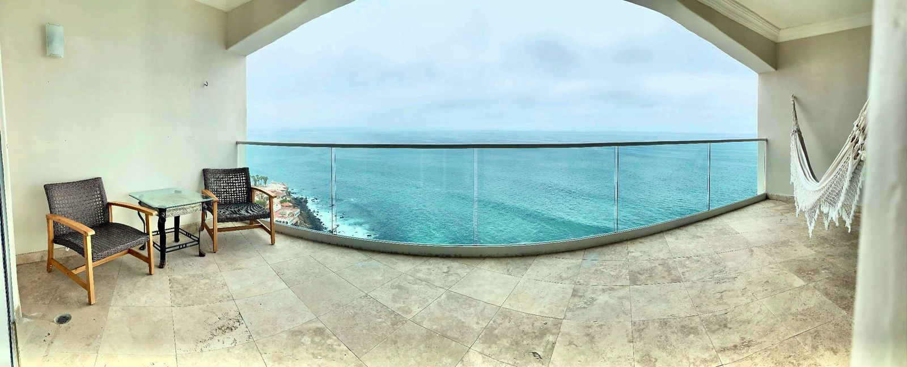

Terrace & views
A wraparound covered terrace with a glass railing, lounge and dining areas, and views of the coastline and open ocean.
703 sq ft above the Pacific
The terrace runs past the living room and both bedrooms. From the 20th floor the view reaches up and down the Rosarito coast.

